论文泛读之4K4D
本文最后更新于 2025年11月12日 下午
多视角视频：4K4D: Real-Time 4D View Synthesis at 4K Resolution [cvpr2024] paper
😄contribution:
- 使用空间雕刻获得粗略的动态场景点云，并将每个点的位置表示为可学习的向量。
- 引入4D特征网格，为每个点分配特征向量这些特征向量输入多层感知器（MLP）网络以预测点的半径、密度和球谐函数（SH）系数。
- 开发了一种可微的深度剥离算法，利用硬件栅格化器进一步显著加速渲染。
- 图像融合模型+连续SH模型。
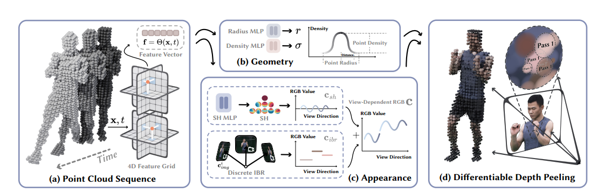
⛺method:
-
使用点云建模动态场景
-
4D嵌入–使用K-Plane作为4D特征场：
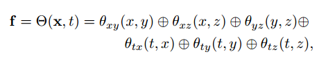
是输入点。 -
几何建模–基于粗略点云，动态场景的几何模型通过在每个点学习3个特征向量表示：位置、半径和密度。其中位置是可学习的向量，半径和密度是通过MLP预测得到的。
这里粗略点云是怎么得到的下面会说。
半径和密度的预测由单独MLP预测，输入是4D特征网格插值的特征向量 -
外观建模–使用图像融合技术以及球谐函数模型构建了一个混合外观模型。图像融合技术表示离散视角依赖的外观，而SH模型表示连续视角依赖的外观。对于帧中点，其在方向下的颜色为：
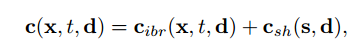问题：图像融合模型在渲染质量方面优于3DGS中使用的SH模型。然而，先前方法中的图像融合模型在推理阶段需要缓慢的网络评估，限制了其渲染速度。
引入了一个新颖的设计，使图像融合网络与视向无关，这一策略使得外观模型沿视向方向离散化。这一缺点通过使用另一个连续的SH模型得到补偿。具体地，对于点，我们首先将其投影到输入图像中，以检索对应的RGB颜色。然后，为了融合输入的RGB颜色，我们根据点坐标和输入图像计算对应的融合权重。为了实现视点依赖的效果，我们根据观察方向选择个最近的输入视图。最后颜色。由于个输入视图是通过最近邻检索获得的，因此沿观察方向不可避免地是离散的。为了实现连续的视点依赖效果，我们附加了由SH模型表示的精细级颜色。
其中的融合权重是用2D CNN从每帧输入图像提取特征图 + 从4D特征网格查询该点的特征向量 输入到一个MLP中计算得到的。而SH系数由另一个MLP从4D特征网格查询该点的特征向量 预测得到。
这里图像融合我的理解就是相当于给点云上色，直觉来说点云的颜色因该是点云投影到RGB图像直接得到对应颜色，但是点云从不同视角观察颜色会变化直接用一张图像的颜色不合理于是就用多张图像融合得到颜色。但这样得到的颜色还是固定的，无法表示视点依赖的颜色变化，于是再加上一个SH模型来表示视点依赖的颜色变化。
这里还有一个疑问：这里不还是需要网络推理吗？后面说有三种外观表示方法：
- 每个点明确定义SH稀疏，但这样模型太大
- 基于MLP的SHA模型，模型是变小了，渲染质量变差了
- 仅使用图像融合模型，渲染质量最好但是推理慢因为把观察方向也作为输入
这里融合了b和c两种方法，但是网络不依赖观察输入所以可以预先计算。
-
-
可微深度剥离渲染
考虑特定的图像像素。在第一次步骤中，我们首先使用硬件栅格化器将点云渲染到图像上，将最近相机的点分配给像素。记点的深度为。在第个渲染步骤中，丢弃所有深度值小于上一路径记录的深度的点，从而为像素获取到第个最近相机的点。在我们的自定义着色器中，实现丢弃更近的点，因此仍然支持硬件栅格化。在进行了个渲染步骤后，像素有一组排序后的点。 基于排序后的点，我们使用体积渲染技术来合成像素的颜色。对于像素的这些点的密度，是基于投影点和像素在二维图像上的距离定义的：
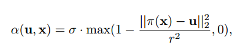这个式子的意思是什么呢？我的理解是这样子的：点投影到像素上有一个距离，这个距离越大说明点离像素越远那么这个点对像素的影响就越小所以密度就越小。这里的是点的半径。
对比原始3DGS：
1
2
3
4
5
6原始3DGS流程：
- 将所有Gaussian中心投影到2D屏幕坐标
- 将屏幕划分为16x16像素的Tile
- 每个Tile内收集所有重叠的Gaussian
- 使用CUDA共享内存进行**冒泡/插入排序**
- 按深度从前向后alpha混合1
2
3
4
5
64K4D流程：
- 保持点云在3D空间不变
- 第1遍渲染：开启深度测试，渲染得到最近层（深度t₀）
- 第k遍渲染：将t_{k-1}传入shader，discard深度≤t_{k-1}的片段
- 重复K遍（训练K=15，推理K=12）
- 每像素得到K个深度有序点深度测试和剔除由GPU固定管线完成，速度极快。
阶段 深度剥离/渲染的实现方式 核心目标 训练 (Training) 使用 PyTorch/自定义 CUDA 实现的可微分深度剥离，进行 K 次可导的体渲染计算。 确保所有参数（位置、密度等）都能收到梯度，从而优化模型。 推理 (Inference) 使用 OpenGL/CUDA/硬件光栅化器 实现的预计算加速后的深度剥离。 追求速度，直接利用硬件不可微但极快的并行计算能力，不需要计算梯度。 然后就是体渲染：
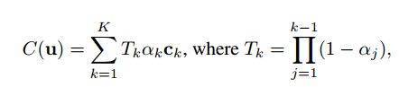 -
训练
loss:
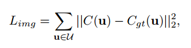
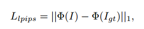
再加一个掩码监督：
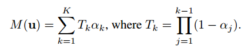
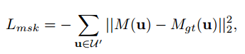 -
推理
首先，我们在推理前预先计算点位置、半径、密度、球谐系数以及颜色混合权重，并将这些属性存储在主内存中。在渲染过程中，这些属性被异步地流式传输到GPU上，通过重叠光栅化与内存复制操作来优化渲染速度。应用该技术后，运行时计算量仅保留深度剥离评估和球谐系数评估。 -
点云初始化
利用现有的多视图重建方法来初始化点云。 对于动态区域，我们使用分割方法来获取输入图像中它们的掩码，并利用空间雕刻算法来提取它们的粗略几何形状。这里的空间雕刻就像现实的雕刻一样首先定义一个完整的3D体素网格，对个2D mask进行投影然后把所有mask外的体素都去掉剩下的体素就是动态区域的粗略几何形状。随后在这些体素内均匀采样点云作为初始点云。
对于静态背景区域，我们利用前景掩码来计算背景像素在所有帧上的带权平均值，得到不包含前景内容的背景图像。然后，在上述图像上训练一个Instant-NGP模型，从而得到初始点云。初始化后，动态区域的典型点数约为每帧250k，而静态背景区域通常包含300k个点。
静态区域获得相当于每张图片把他们动态区域mask掉然后将所有图片“摞”在一起，这样有些帧不可见但在其他帧可见的点就可以体现出来，然后训练 Instant-NGP 提取点云。
每帧都250k点，相当于每帧都存储一个3DGS场景，这样做会不会内存消耗有点大啊。
这里不太清楚怎么提取点云的，Instant-NGP不是隐式表示吗？问了AI说是训练好后进行空间采样然后逐点查询密度然后阈值过滤得到点云。
⭐experiment:
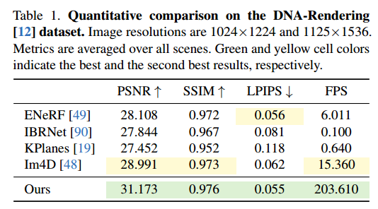
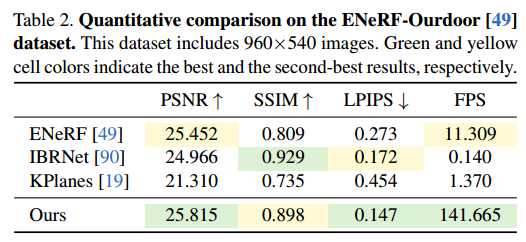
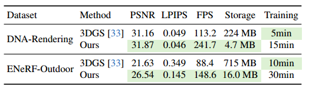
这里存储反而变小了，我觉得可能是因为4K4D没有存储每个点的完整SH系数而是用MLP预测的原因。
💭discussion:
总的来说是存储了一个4D特征网格，颜色、半径、密度都由对应的MLP预测，并且每帧都存储一个3DGS场景。渲染时通过硬件栅格化器进行深度剥离加速渲染。正是因为每帧都有对应的点云所以可以预计算点的属性从而加速渲染。